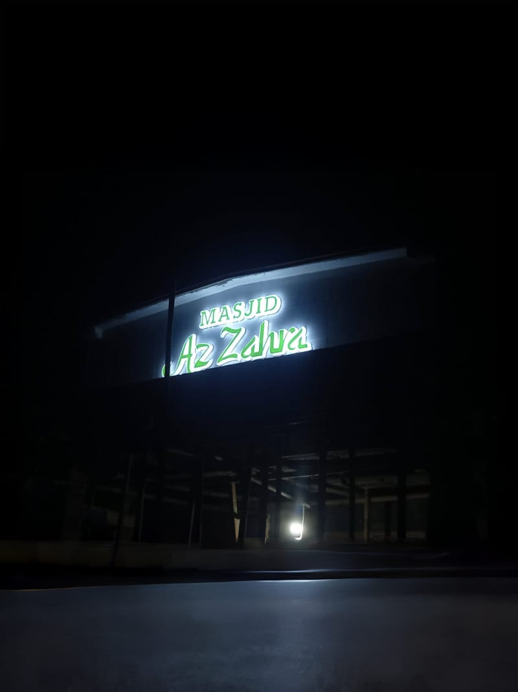
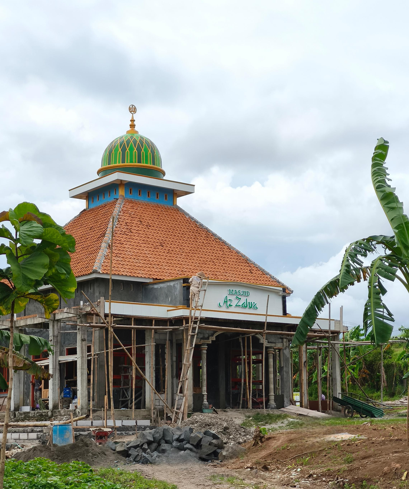

Tentang Masjid
Allah Help Those Who Help Themselves
Masjid Az-Zahra adalah pusat ibadah dan kegiatan keagamaan yang terletak di Desa Jeruklegi Kaliputih, Kabupaten Cilacap. Didirikan sebagai simbol ketakwaan dan ukhuwah Islamiyah, masjid ini menjadi tempat bagi masyarakat setempat untuk memperkuat iman dan memupuk kebersamaan melalui berbagai kegiatan spiritual, pendidikan, dan sosial. Masjid Az-Zahra dirancang dengan arsitektur yang sederhana namun elegan, mencerminkan keindahan Islam sekaligus memberikan kenyamanan bagi jamaah. Selain sebagai tempat shalat, masjid ini juga menjadi pusat dakwah, pendidikan agama, serta kegiatan sosial yang bermanfaat bagi masyarakat sekitar.